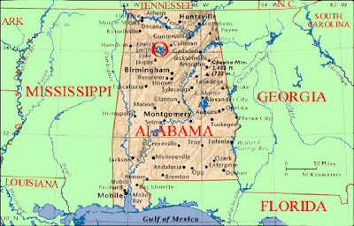

Vanderboegh: Reverberations and Synergies

Reverberations and Synergies
by Mike Vanderboegh
(Another Chapter of 'Absolved')
Sound is a funny thing.
In
the Civil War, entire battles were sometimes fought within a few miles
of troops who passed the day unaware that their comrades-in-arms were
fighting desperately. In other times and places, the sounds of battle
have reverberated and carried for many miles. This is especially true
across bodies of water.
You know, like Smith Lake.
For
sound and fury, the skirmish at the old Gordon cabin hadn't been much as
skirmishes go, all the gunfire being one-sided. And Smith Lake and the
Bankhead National Forest are no strangers to echoing gunshots from
hunters, target shooters and occasional drunken white boys blasting
holes in federal, state and local signage. But automatic weapons fire is
a bit rarer and would have drawn the notice of curious passersby -- not
that there were many of those in Charlie Quintard's neck of the woods
-- even in the peaceful days before the Battle of Sipsey Street and the
disappearance of the first four ATF agents right afterward.
But now?
Well,
now only an idiot would dismiss that episodic, fat-in-the-fire
sustained crackle echoing through the woods and across the water as
anything else but evidence that the undeclared civil war which had begun
on Sipsey Street had come home to Phil Gordon's birthplace.
Now
as it happened only two people who heard the sounds of the death agony
of the ATF's second team understood the probable cause of what they were
hearing. One was Jimmy Flynn, who had just turned 19 and was at the
moment trying to get into Katy Dobson's drawers. The fact that Jimmy was
still in the preliminaries of talking Katy into what he had in mind
played a part in his realization. Had he been farther along in the
process he might not have noticed at all. But Katy was no pushover. In
fact she had no intention of giving Jimmy what he wanted just then. Her
own personal standards required at least an engagement ring before
surrendering her secrets, even if she loved young Mr. Flynn, which she
did.
So Jimmy was still in possession of his faculties when the first burst of pistol shots that killed Pushmataha rang out.
Huh,
he thought, that wasn't far away. Some feller with a semi-auto pistol
shootin' a snake probably. There were plenty of snakes up this way.
The
rock with the beautiful view of the river that Jimmy had chosen for
courting the hard-to-get Miss Dobson was probably the least snaky place
around here, which was why he had chosen it. Nothing like an Eastern
Diamondback rattler or a copperhead to ruin the mood.
But when
the paroxysm of fire at the pine roadblock echoed up to him, Jimmy Flynn
knew exactly what was going on and he sat up straight. Damn, he
thought. It's the ATF again. The Suburban had passed them on the main
road before turning off in front of them, heading down to the old Gordon
place.
Jimmy knew about the ATF. Will Shipman, the commander of
both his re-enactment unit and the newly organized Free State
Constitutional Militia of which Jimmy was a proud member, had told him
all about them. Jimmy idolized Will. He'd been places and done things
that Jimmy dreamed he might one day see and do. Now, he heard the
gunfire and realized that Will needed to know about this.
Having
more youthful enthusiasm than sense, had Jimmy been on his own he might
have moved toward the sound of the guns to discover what was really
happening. But he couldn't do that with Katy in tow.
Katy,
unmindful of the sound at first and not understanding a bit why Jimmy
was no longer paying attention to HER, asked petulantly, "What's the
matter?"
"That's gunfire," explained Jimmy.
Katy had heard
gunfire all her life. Everybody up in Winston County owned a gun and
her daddy had taught her how to shoot from when she was tee-niney. She
did not, however, have an educated ear for gunfire, nor was she
particularly interested in it. What she was interested in was becoming
Jimmy Flynn's wife and having his babies -- in that order.
"Somebody
shooting a snake," she explained. There were a whole lot more snakes
than guns in Winston County, and anybody who lived outside of town had
shot one, or seen one shot.
Jimmy started to explain that it was
machinegun fire and nobody shot snakes with machineguns, but the natural
caution that his daddy had taught, and occasionally beat into, him took
over.
"Don't run your mouth," his daddy had said, "until you've
got somethin' to say and you know who's listening." And one other thing -
"No woman ever kept a secret, except her own."
This much Jimmy
could work out for himself. There were four ATF men missing. The whole
county knew about the Suburban behind the Sheriff's Office. The feds
were offering $10,000 for information about what might have happened to
them. Everybody in town had a guess.
Will Shipman had told him
with a wink, "I guess they ran into something in the woods. Maybe they
were eaten by trolls." There were crackheads in town who had already
sold their souls for far less and who would rat out their own mothers
for a rock, but nobody had a clue.
And Will Shipman told Jimmy
Flynn something else, "Well, its like my old Army buddy Scarpetti used
to say, 'Three men can keep a secret if two of them are dead.'" Meaning
whoever accomplished the disappearance of the ATF agents was probably
working alone.
Which meant that, since the random disappearance
of ATF agents in the wake of the agency's attack on Phil Gordon was
viewed by almost everybody in Winston County, heck, the entire state of
Alabama, as a positive social good, whoever was on the receiving end of
that gunfire was doing the Lord's own work this day. Therefore, it would
not do to draw Katy Dobson's attention to it. Momma raised ugly kids,
not dumb ones, Jimmy thought. That was something else his daddy had
said.
So Jimmy Flynn gave up any thought of getting in Katy
Dobson's drawers that day, laid back down beside her on the blanket and
cuddled her, listening hard for more shots. In due time, as Charlie
Quintard matched his bow and arrows against the ATF's M-4s and MP-5s, he
heard them.
When the flash bangs went off, though, even Katy sat up. "What was THAT?" she exclaimed.
"Oh,"
said Jimmy, "I think its somebody celebrating with fireworks. Don't
worry about it." And then he said something that he couldn't believe
later he had, although the thought had been growing in him for some
time. Strangely, the sounds of the war close by crystallized it for him.
"Katy,
would you marry me? I know I don't make much at the factory, but with
times being the way they are now, I just don't think we should wait.
Will you marry me?"
Katy was flabbergasted and forgot all about
the bangs and booms. The campaign for Jimmy Flynn's wedding ring was
carefully mapped out in her head and should have taken at least another
three months. "Oh, yes, Jimmy, yes!"
They kissed then, and kept
on kissing. In fact, Jimmy Flynn could have gotten into Katy Dobson's
drawers at that moment, but strangely all he wanted to do was hold her
tight as he listened intently to the sounds of the forest, the lake and
the odd gunshots echoing across them.
Men, thought Katy. I'll never understand them. But she didn't care. She was going to be Mrs. Jimmy Flynn after all.
And wouldn't Lori Peterson just be jealous fit to bust?
----------------------------
The
other person who heard the shots and knew what he was hearing was
Carter Johnson, the Sheriff of Winston County. Actually, the only shots
that he heard came from the last burst of Carmichael's MP-5. He had been
headed north on the lake in his bass boat, christened "Semper Fi," with
his nephew Donald Waters, supposedly looking for the missing four ATF
agents but actually to get away from the phones, the nagging press, the
demanding feds and do a little bit of fishing. So, what with the noise
of the motor going full-tilt-boogie and the bang of the water against
the hull, Sheriff Johnson didn't hear anything.
Something penetrated his subconscious though.
Something was not right.
His
premonitions had served him well over the years, first in Vietnam and
then in a lifetime in law enforcement, and he had learned to pay
attention to them. The last time had been when he was about to kick in
the door to an untended meth lab a few years back, and something nagged
at his brain not to do it. He went around to the side of the trailer,
stepped up on a milk crate and peeped in the window. There was a
tripwire attached to the door. He couldn't see what it was attached to,
but he decided to disassemble a back window and go in that way. It took
him and the deputies 45 minutes to do that with the poor set of tools
they had, but their patience was rewarded.
They got to live.
On
the other end of the trip wire was an M18A1 Claymore directional mine
that was later determined to have been listed as "expended in training"
back in the 1980s at Camp Shelby, Mississippi.
So when something
niggled at the back of his head, something that his wife had called his
"spider sense," Carter Johnson paid attention. He cut the boat motor and
listened.
Silence. Then, "Brrrrrp." Then, nothing.
He
couldn't even tell what side of the lake it had come from. A
submachinegun, though, he was certain. He waited for a second burst to
help him, or some gunfire in reply but nothing happened. He turned to
his nephew to see if he had heard it and saw his head bobbing up and
down to the MP-3 player.
Moron.
For a few minutes more he sat there waiting, until his nephew got curious and asked why they'd stopped.
"Thought
I heard something," Johnson growled. He was beginning to think that
hiring his nephew as a deputy was the biggest mistake he'd ever made in
life, up to and including the time he stepped in a punji trap during
Operation Tuscaloosa at An Hoa in 1967.
There wasn't a thing
about the boy that didn't irritate him and if his sister hadn't begged
him in front of their sainted mother he wouldn't have brought him on
board. The kid was only here in the boat to be his flunky anyway, to
hand out the beer and bait the hooks, which unfortunately was all he was
qualified for. Skeeter Haynes, former Birmingham police captain and his
likely primary opposition had already been nosing around, asking sly
questions and making pointed comments about "nepotism." The election
wasn't until next year, but the Sheriff had already made up his mind to
dump him on some other poor, unsuspecting police department before it
became an issue. They owed him a favor down in Walker County. But then,
that place was crooked as a dog's hind leg and Donny was stupid enough
that he'd probably get himself killed the first week.
His sister wouldn't thank him for THAT.
He
let the boat drift for a while, then restarted the engine and very
slowly chugged upriver out in the middle of the channel, still unsure of
which side the sound had come from, trying to listen over the low
mutter of the engine. He actually passed Dead Man's Holler on his right
while Charlie was policing up the ATF bodies at the roadblock.
Carmichael heard the boat, but thought it was something Charlie was up
to so he stayed quiet, grinding his teeth in pain. And although the
Sheriff could see the dock and Charlie's pole sticking out of the
fixture, brush shielded his view of the hog-tied ATF supervisor. Thus,
Carmichael's last chance for life passed upstream.
By the time
the dead man hollered, Sheriff Johnson was passing the second bend above
the old Gordon place and heard not a thing. But he HAD heard SOMETHING.
His intuition borne of long experience with the Feds told him that they
had done something stupid again.
Indeed, they seemed to always
be doing something stupid. Did they have a test or something that said,
"Hey, if you're kneejerk stupid, we want you in the ATF"? It seemed like
it. Ever since they'd been reinvigorated by the Gun Control Act of
1968, they'd been doing deadly stupidities, from the Kenyon Ballew
shooting to Waco to Sipsey Street.
And that last was pure-dee
DUMB. He knew Phil Gordon well. He grew up with him and went to school
with him, although he was two years older than Phil and graduated
sooner. Johnson had gone straight into the Marines after graduation,
Phil went into the Army two years later. Phil was a serious shooter and a
self-effacing southern gentleman, a devout Christian and good family
man who'd raised a passel of accomplished kids. If he had a vice it was
running his mouth about injustice and government excesses, which was why
the ATF had targeted him, probably.
But whatever their made-up
excuse, and no matter how many ATF agents he had killed in self-defense,
the folks up here figured that it was the ATF and not Phil Gordon, who
had it coming. And if now some more ATF agents had gone missing, well,
wasn't that just too bad? Winston County had a long history of making
"authorities" like Confederate Home Guards and conscription officers, as
well as a hundred and forty years of state and federal liquor and tax
revenue agents, disappear. That four more were now missing was seen by
Winston Countians, after the death of someone they knew and respected,
as merely the latest episode in the region's proud, independent saga.
Feds were SUPPOSED to disappear up here, didn't THEY know THAT? And if
the perpretrators were not caught, then that was OK with most of the
voters too.
One other thing. Sheriff Carter Johnson knew that if
he was seen by the voters as a tool of the Feds and not the local
standard bearer of law enforcement, he didn't have a hope in hell of
getting re-elected. Skeeter Haynes would see to that.
So those
were the horns of his dilemma, now made worse by the thought that with
that burst of submachinegun fire, some more ATF agents may have just
been disappeared, or killed, or whatever. Or maybe they'd get lucky, bag
their trophy, and leave the county, and more importantly, leave Sheriff
Carter Johnson the hell alone. Of course, if they killed somebody that
the local folks deemed innocent, like Phil Gordon, the resentments would
wash over him because he hadn't protected them long enough to get a
fair trial. As if there was anything such like in the federal court
system these days. And the Feds had already proven they didn't trust him
enough to consult him about anything, so what could he do? In any case,
his life was about to get a lot more miserable.
As a result, the Sheriff finished what he had set out to do that morning.
He fished.
He
tried not to worry about missing ATF agents and submachinegun fire in
the forest and pondered over how to get rid of his nephew without
getting him killed. As if to deliberately compound his frustration, the
fish refused to bite. Maybe if Skeeter Haynes wants my job, I should pay
him back by letting him have it.
A poor bastard he'd be then.
Just like me.
--------------------------
"Tell
me that again, slowly," Will Shipman ordered Jimmy Flynn. They were
sitting alone in Will Shipman's kitchen, sharing coffee and secrets. It
was the night of the skirmish at the old Gordon cabin.
So Jimmy
did, slowly. The Suburban passing him, US government plates, packed with
stone-faced men in combat gear, the automatic weapons fire, the booms,
the whiff of tear gas as he and Katy had driven home past the entrance
to the old Gordon place on the way home. And oh, yeah, could Will
believe it? He, Jimmy Flynn, was getting married.
That part was
easy. His wife had told him to expect it four months ago. Women were
wise in the way of such things, while most men like Jimmy (and me,
thought Will wistfully) were merely targets on female radar screens,
ready to be brought down by charm, feminine wiles and pheremones.
But
if another bunch of ATF had truly met misfortune in the Bankhead, this
county was about to be torn apart, and the Feds were likely going to
come looking for yours truly, Will knew. He had made no secret of his
opinions of the innocence of Phil Gordon and the guilt of the ATF for
the Battle of Sipsey Street. And some folks even knew about his militia
activities. This was not good. He had to first verify that something had
actually happened, without raising suspicions, of course. In addition,
he knew he had to figure out quickly who was responsible for taking on
and apparently defeating two ATF teams. He had a guess, but it didn't
seem possible. The man he suspected didn't even own a firearm.
--------------------------
The
morning after Sheriff Johnson's fishing trip, the ATF was confirming,
in a backhanded sort of way by asking about them, that some more of
their agents had come up missing. It was six this time. The regional
office in Nashville called, wanting to know if there was another
Suburban behind his office. There wasn't. But there were more details
about this team's mission than there had been the last time. They'd had
only one destination -- Phil Gordon's old cabin on the lake -- which was
right close by where the Sheriff heard the shots yesterday. The Sheriff
knew who lived there, and like Will Shipman, he couldn't believe it
either.
But before Sheriff Johnson set out to find Charlie
Quintard, he had to very carefully consider whether he really wanted to
find him. He knew that the ATF, who had undercover agents crawling all
over Double Springs (they stuck out like sore thumbs), wouldn't stop
until they found their men and the killer or killers. What he was trying
to determine was, did he want to help them or hinder them? Which would
get him re-elected? If, that is, he wanted to be re-elected at all in
this brave new world gone mad.
--------------------------
For
his part, Charlie Quintard had been a very busy man since he buried
Pushmataha. He'd policed up all the ATF's firearms and equipment (he had
quite a gun collection by now, what with the meth heads and the Feds
leaving things lying around on the ground) and stashed them in two 55
gallon drums off of Phil Gordon's property out in the Bankhead National
Forest in a little cave he had found a couple of years ago.
He'd
also done his best to clean up the forensic detritus of the skirmish,
picking up brass, wiping out the Suburban's tire tracks and covering
over torn up undergrowth with mud and camouflage vegetation of various
kinds. He even repaired, for the second time, the lock on his door. It
was not going to be enough, he knew. For one thing, it was impossible to
find all the brass in the thick undergrowth. If somebody came out here
with a metal detector they were bound to find what he couldn't.
It
was time to leave the Gordon cabin. He hated it, but he knew he had no
choice. It was going to be back to the woods like his ancestors and his
life was going to be a lot rougher. But in order to do it, he needed
help moving his larder.
Now, before the place flooded with Feds.
--------------------------
"I've
gotta get me some more deputies," Barton Meigs murmured to himself in
his Nashville office, bitterly recalling the line of Brian Dennehy's
crooked sheriff in Silverado. No shit. First the wholesale slaughter of
more than a hundred agents in the Battle of Sipsey Street, then four,
followed by six more, missing up in Winston County on a stupid follow up
search. Three more dead (and six wounded) in Cherokee County, Alabama
on what should have been a piece-of-cake no-knock against a gunshop
owner for straw-man sales. Only the dickhead decided he wasn't going to
be arrested that day or any other and went down fighting.
Worse,
it was done so stupidly that we managed to kill his wife and six year
old daughter in the collateral damage. Two more agents wounded in a
similar incident in Pulaski, Tennessee.
"Has the ATF Declared War
on the American People?" read the headline on the editorial in the Wall
Street Journal this morning. The subhead read, "Or Have the American
People Declared War on the ATF?"
Good questions.
For the
thousandth time, he cursed his predecessor at this desk. HE was the
idiot who'd initiated the Phil Gordon investigation because he didn't
like what the moke was saying about him and the agency. As if we've ever
been popular, Meigs snorted. Well, the dumbshit had started a war and
the only thing good Barton Meigs could say about him was that Phil
Gordon had made him pay with his life for his terminal stupidity.
Meigs hoped the Devil was giving his predecessor a personal After Action Review in Hell right now.
The
dirty little secret of the ATF, and indeed of all federal law
enforcement including the IRS, was on display for anyone who had the
eyes to see. As big and bad, as omniscient and omnipresent as we pretend
to be in a country this size, we ain't and we'll never be. It was the
whole Wizard of Oz thing. Most people bought the display, but some folks
didn't. And he could shout, "Pay no attention to the man behind the
curtain" all he wanted, but it didn't mean he could conjure live agents
to replace dead ones out of thin air.
If this turns into a war,
we lose. Unless the military comes in on our side, which Barton Meigs
figured it wouldn't. The nasty arguments he had with his brother the
Major General like clockwork every Thanksgiving told him as much.
Worse
than the casualties were the resignations sweeping the agency. Nobody
wanted to risk getting killed short of retirement, it seemed. There were
rumors of a "national emergency stop loss" order from D.C., but all
that did was accellerate the exodus. The unions were screaming bloody
murder too. If the President decided to make this a national "law and
order" crusade as was the rumor, this was going to get very ugly. Some
people just don't know when to back off. We did it after Waco, didn't
we? We managed to save the agency when everybody, including the
turf-jealous FBI, wanted us gone.
But Clinton, for all the names
the conservatives called him had in the end been a pragmatic politician,
perhaps because he was just in it for the broads. But this President?
This guy was a true believer and arrogant to boot. The President, whose
photo hung behind him on the wall, was just the kind of man to take a
terrible situation and make it truly horrific.
Meigs looked at an
organization chart for his region that had been adjusted to reflect the
losses since Sipsey Street. There were more holes than filled
positions, even after the wave of emergency transfers in from all over
the country. The loss of institutional memory represented by those empty
slots was staggering. Every single outstanding case now in progress or
in the courts in the southeastern United States had been affected. Real
criminals, not bumbling gun dealers guilty of paperwork errors or target
shooters guilty of nothing but malfunctioning semi-auto rifles, were
getting off on dismissed charges. Vicious rapists, drug dealers and
killers, were walking because we picked on the wrong guy and he fed us
our own ass.
Meigs had been all through what paper trail remained
on Gordon in ATF files. The guy hadn't been a "terrorist" as the
national PR spokesmen of his agency were saying. He was just a
loudmouth. A very talented loudmouth who had two things: tactical
warning of ATF intentions and nothing to lose. He thought of his
predecessor and cursed him, again.
You stupid SOB. Burn in Hell.
His secretary broke in on his foul mood. "Sir, Assistant Director Atherton is on line three for you."
Oh, God, what now? He picked up the handset and punched the line button.
"Meigs."
"Meigs, this is AD Atherton."
"Yes, sir?"
"I've
just come from a meeting with the Director and the Attorney General.
The decision has been taken to get you some more help."
"That's good news sir." Meigs paused, "Transfers from the FBI and other agencies?"
"No,
they've got their own demands. We're working on something much bigger
to deal with this whole problem of domestic gun terrorism."
Uh, oh, thought Meigs, that's a new term. "Yes, sir?"
"Yes.
You'll be briefed on that when we've finalized the operational plan,
but for now I'm sending you a man who can fill up your T.O. & E.
with operational bodies to make up for your grievous losses."
"Who, sir?"
"John
Claxton of Brightfire. He'll be in Nashville tomorrow morning. It's an
open-ended contract. Tell him what you need and he'll get it for you.
They're a very capable firm with a lot of experience. Money is no
object."
Meigs was silent.
"Meigs," said the AD, "Do you have any questions about this?"
Meigs
decided to risk it. "Sir, I need experienced federal law enforcement
officers, even inexperienced ones will do in a pinch, but I need agents,
I don't need mercenaries unfamiliar with the way we do things."
The AD was silent for a moment, which Meigs knew to be a bad sign.
"Meigs?"
"Yes, sir."
"'The way we do things' is about to change. Work with Claxton or find another job."
"Yes, sir." Meigs heard the click on the other end and set down the handset.
Mercenaries.
Shit and shove me in it.
Mercenaries.
Early retirement was starting to look pretty good after all.
--------------------------
Will Shipman was locking up for the night when a soft tap came at his back door. "Huh?"
His
dogs hadn't barked. That was weird. They usually announced every car
that passed by down on the road. Will reached on top of the tall shelf
in the hall leading to the kitchen and retrieved an M1911 .45 pistol. He
racked the slide and eased to the back of the house. The kitchen lights
were already off. He peeked through the curtain at the window over the
sink and saw someone standing in the soft glow of the back porchlight.
"Charlie?"
Will
safed the weapon, tucked it in his belt behind him Mexican style, moved
to the door and opened it. Sure enough. It was Charlie Quintard.
"Can I come in, Will?" Quintard asked softly through the screen door. "I need to talk to you about somethin'."
"Sure Charlie, come on in," Will said as he pushed the screen door open for Charlie to enter.
"Have
a seat," Will invited, indicating the same kitchen table he'd talked
with Jimmy Flynn at a few hours before. "Can I get you a cup of coffee,
or somethin'?"
"No coffee," said Charlie, "but a glass of water would be nice. I've been walkin' for a ways."
"All the way from Phil's place?" That was twenty miles or more, for Will lived clean on the other side of Double Springs.
"Naw,
I hitchhiked most of the way, but after dark I couldn't get any more
rides so I jest walked. It's been a long day." The weariness in Charlie
Quintard's voice was evident.
Will got him a glass and the
pitcher of water Mary kept in the fridge and poured Charlie a drink. He
left the pitcher on the table and sat down across from the Indian,
waiting in silence while Charlie slaked his thirst.
"How can I help you, Charlie?" he asked after Quintard emptied the glass, worried about the answer he might get.
When Charlie finished telling him almost an hour later, Will Shipman realized that he hadn't been worried enough.
But first Will had a question: "Why me?"
"'We
always knew that someday we were going to have to draw the line. Phil
Gordon drew it and the Feds stepped over it. It's time to shove back.'"
Will
was smart enough to know when his own words were being quoted back to
him. Even so, he was darn sure that Charlie hadn't been there when he
said them at the first muster of the Free State Constitutional Militia
after the Battle of Sipsey Street.
Or had he?
"How . . .?"
Charlie
smiled. "Will, I've been practicin' my stalkin' skills fer years in the
Bankhead and up in the Sipsey. You think I couldn't sneak up on a bunch
of newly minted militiamen?"
When he thought back on it later,
Will Shipman recalled that he thought someone was watching him and his
recruits from the woods that day, but he'd put it down to the ghosts of
Winston County. But just now, he said, "Well, I reckon you did."
"You know when you swore all those boys into your new militia?"
Will nodded.
"Well,
I joined too. I repeated your oath, I jest didn't make myself known."
Charlie Quintard paused. "In all my life," he went on, "no one ever
treated me as fairly or as kindly as Phil Gordon. I learned more about
truth an' honor an' principle from him than I did my own daddy. He was
as decent a human being as I ever knew an' if the ATF killed him, it
wasn't because of anything he deserved to get. Since then, I've had two
encounters with those godless heathens. They're thieves, murderers and
dog-killers. Whatever Phil gave them, they deserved it. An' I know the
ones that I got deserved it too."
When he talked of Phil Gordon,
Charlie's face was soft. When he finished talking about the ATF his
flinty visage looked like iron beaten in a forge.
Something occured to Will. "Thieves? What did they steal?"
Charlie had left that part out. He told Will about Carmichael and the medicine bag and Henderson and the hunting knife.
When Charlie got to the part about Henderson, Will blurted out, "You did WHAT?"
"I
said," Charlie explained patiently, "I put his hand in a vise an' threw
him in after his dead buddies. My granddaddy did that to a Oxnard who
stole his mule back in the Thirties. He got the mule back at gunpoint
an' took the thief to our family's water-powered forge down by the old
river bed -- this was before the dam backed up the lake. Anyway he had
an old vise he wasn't using an' after he tied the man's hands together
he put his right hand in the vise an' crushed it tight. The Oxnard's
always were no account, he said, an' his cousin was the Sheriff back
then so turnin' him in was a waste of time. An' then he tossed him in
the river and tole him to swim. Went down like a boat anchor." Charlie
paused.
"So did Henderson, screamin' an' hollerin'. He'd been
bragging to his buddies while they tore my place apart about how he'd
been there when they killed Phil Gordon. I figured he had it comin'
after I saw him steal my knife. I asked granddaddy once before he died
why he didn't he just hang Oxnard like most folks did horsethieves, an'
he tole me, 'I didn't have a long enough rope an' he wasn't worth the
powder.'"
Charlie paused, half-smiling. "I guess that's what
happened to me the second time. I didn't have another vise for
Carmichael so I jest strapped him in the Suburban. Like my granddaddy, I
used what I had. Improvise, adapt an' overcome."
Will thought
about that for a while, as Charlie emptied the water pitcher and waited.
He did not want Charlie for an enemy, that was for sure and certain.
But he was going to be a dangerous friend too. He could see that
plainly. Not for so much as anything Charlie might do to him, but more
for what Charlie's enemies might do to them both. And he saw that
Charlie's enemies, who had been Phil Gordon's enemies before that, were
his enemies now too.
Well, I talked big for a lot of years about
"drawin' lines in the dirt" and now that one's been drawn, I can't
exactly back down, now can I? Not and look myself in the mirror.
Explaining that to Mary would be another thing. Thank God she was at
Susie's house helping with the new grandbaby.
But there comes a
time in every guerrilla's life when he must choose between fire and
maneuver and escape and evade. For now he would help Charlie escape and
evade, because he knew he would need him when it came time to fire and
maneuver. Charlie Quintard could also help train his people to become
stalkers and killers. And we're going to need more stalkers and killers
before this is over.
"Charlie," Will said, "welcome to the Free
State Constitutional Militia. I accept your enlistment. Now, let's get
my pickup truck and go move your larder before tomorrow morning."
Charlie smiled, and stood up. "Can I use your restroom, Will? That water went clean through me."
"Sure thing," said Will, "first door on the left down the hall."
As he watched the Indian leave the kitchen, Will Shipman shook his head in disbelief.
Puttin' a thief's hand in a VISE and droppin' him in a river.
Damn.
I mean, damn.
--------------------------
It
was coming up dawn before they finished moving the larder and both men
were beyond weary. "I'm too old for this crap, Charlie," Will said at
one point after they'd humped the last of the five gallon buckets up to
the cave.
During a break, Charlie had showed him his plunder in
the two 55 gallon barrels. Will couldn't believe it. What a haul. And
this was no gun collection that had been purchased over time, nor some
government shipment gone astray. These were all battle trophies, taken
in single combat.
Will Shipman had been a soldier and he had killed people in combat. That was one thing.
Charlie, well...Charlie was a warrior. And Will knew the difference.
"Charlie,"
Will said after he'd caught his breath, "I'm going to want your help
trainin' my people after this blows over. Stalkin', trackin', edged
weapons, close quarters combat."
"Yeah," said Charlie, "I can do that."
"But I want you to learn something too, for me."
"Uh, OK, what?" Charlie was puzzled.
Will
shifted the lid off the first drum and pulled out a weapon he'd seen
earlier. After pulling the magazine and racking the bolt, he safed the
weapon and said, "Tell me about this."
"Oh, well, that belonged
to one of them meth heads. It fires real quiet. I know because he tried
to kill me with it. Couldn't hit the broadside of a barn, though."
Charlie gave his signature half-grin and then volunteered, "It ain't
really silent cause it makes a clackin' sound. But it's real quiet
compared to a regular gun."
"So this can does work," Will
replied. "You can't really tell by lookin' at 'em, you've got to try it.
There's lots of fake suppressors out there. But I'll take your word for
it." Will shifted the weapon back into the glare of the electric
lantern they were using.
"Charlie, this is an Ingram MAC-10
submachinegun. It fires .45 caliber rounds out of a 30-round magazine,
from an open bolt. This is the selector switch. This is safe, this is
semi-auto and this is full auto. The feller who was shootin' at you was
probably using full auto, and he probably didn't use the fold-out stock,
did he?"
"That's just like I picked it up off the ground," Charlie replied. "Had to clean a little blood off it though."
"Well,
the stock folds out like this, see?" Will manipulated the mechanism.
"And this little strap hanging down from the front you use to pull the
muzzle down when you fire. Like this." Will mounted the weapon to his
shoulder and showed Charlie the proper hold and stance, leaning into the
shot with his left foot forward.
"Are you right handed?"
"Yeah," said Charlie.
"OK, do what I just did and hold it up like you're going to fire at somebody."
Charlie complied, and Will corrected his stance and hold. "More like that, Charlie. Got it?"
"I guess, but I'm a lot better with a bow."
"I know, but sometimes only a firearm will do. You see that don't you?"
"Yeah, I guess, but how do I practice with it up here?"
"How
far back does this cave go, after you get past that big rock?" Will
flashed his own combat light back into the opening behind them.
"Well,
about, I don't know, twenty-five yards or so. You can stand up in it
for about ten of those where it gets straight following a fissure in the
layer. If you're thinking of me shootin' back there, I'd rather not."
Will
thought for a moment, about noise and powdersmoke and breathing the
already fetid air of the cave. Probably wouldn't be good to give away
his position anyway. Lord knows what technology they were going to bring
to bear to find him up here.
"All right. Look. For now let's
just say that you learn how to take it apart, clean it and dry-fire it.
Do you have any more magazines for this?"
"Sure," said Charlie
and rooted around in the barrel, clanking and banging until he pulled
out an old GI ammo pouch with a shoulder strap containing five other
thirty rounders. "Here."
Will examined them one at time. Three were loaded. Two were rusty.
"Look,
Charlie, the other thing we're going to have to do is preserve this
stuff from rusting." Will thought. "But now is not the time."
Daylight was coming fast and the truck had to be out of here. Will put the lid back in place on the drum.
"OK, we've got everything you need right?"
"Yeah, I can get by on this. But I'm low on candles and matches."
"All
right. Don't under any circumstances go back to the cabin. You know the
cache points we talked about. I'll see that you get some candles and
some other things you need at the first one by tomorrow night. It's the
closest and you don't want to be moving around much for a while. I'll
also get you a means to communicate with me if you need me. Anything
else?"
"No," said Charlie slowly, "Just thanks."
"Charlie,
I never got a chance to help Phil. I know he'd approve of me helpin'
you. But what I really think is that we're gonna be helpin' each other
thru this shitstorm that's about to hit."
Charlie, thinking on the ten dead agents and Pushmataha, asked plaintively, "You mean it ain't hit yet?"
Will, realizing what Charlie had been through, shook his head, "Believe me, we ain't seen nothin' yet."
The two men shook hands.
"The supplies will be there. Keep safe."
Charlie said, "I will," not really believing "safe" was possible.
Will Shipman turned and disappeared out the mouth of the cave into the coming day.
Charlie
was too exhausted to arrange anything now. He picked out a flat spot on
the cave floor and selected two of his thickest blankets and rolled
them out. Then he pulled out his sleeping bag and unrolled it over top
of them. He took off his boots and slipped on some leather mocassins
he'd made last winter. Then he slipped into the bag, using another
blanket for a pillow.
His last thought before he drifted off was of how much he missed the faithful Pushmataha.
In his dreams, the dog licked his face, and Charlie smiled.
posted by Concerned American | 4:11 AM


{kind=link}
7 Comments:
Once again, brilliant.
You have the net story anticipation going here. Every time I check my blogs, I'm hoping that you'll have another chapter up.
Keep going Mike. III
Gripping.
III
1894C
I can almost feel like I am actually in the situations in this novel.
Just a question though for Mike: Which Civil War are we talking about here in the first paragraph? The one against Northern Aggression or the one for Restoration?
...ahhhh, Pushmataha.... Faithful dog that visits in the dreams of the master and friend. I feel nothing for the agents. But the dog..... a good dog can easily be better for a man's soul than other men.
Puttin' a thief's hand in a VISE and droppin' him in a river.
Damn.
I mean, damn.
- too cool! Keep a writin' - awesome stuff... wish I had written it ;-)
III
Post a Comment
Subscribe to Post Comments [Atom]
<< Home